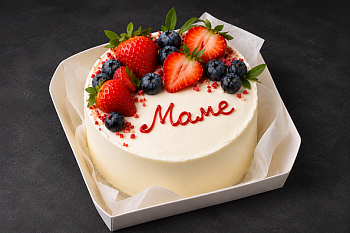

Торт «Для мамы»
Нежный сметанный бисквит, воздушный крем на основе сливочного сыра и сочная малиновая начинка с тонкими нотами мяты. Легкая ягодная кислинка оттеняет сливочную сладость, создавая гармоничный, по-домашнему уютный вкус. Идеальный сладкий подарок ко Дню матери - чтобы сказать «спасибо» самому близкому человеку
10370.5 Ккал, Белки - 125.8 г, Жиры - 533.5 г, Углеводы - 1266.5 г